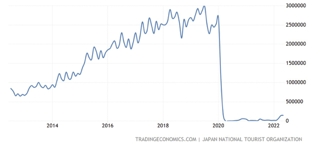
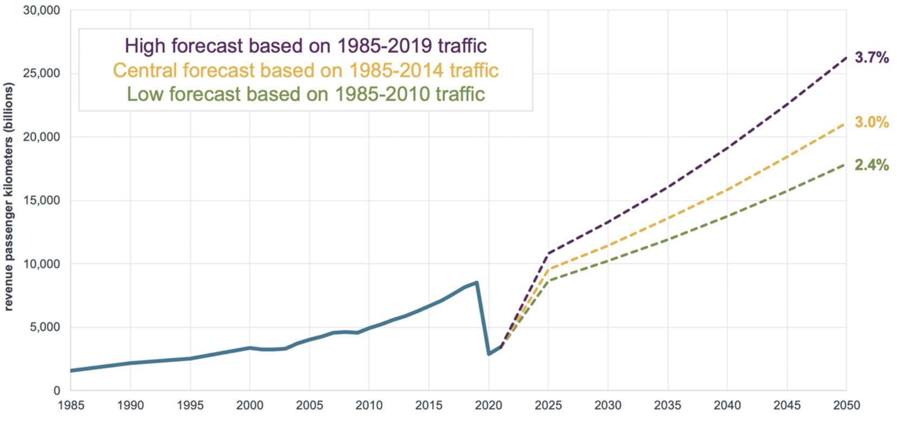

The Return of Tourists - and Their Unsustainable Air Travel - to Japan
07/15 2022
Author: David Sussman
Only two years ago, tourism and airlines were two of the industries hardest hit by customer’s behavioral changes in response to the COVID-19 pandemic, with passenger numbers for leisure and vacation-related flights dropping almost to zero. Business travel was not hit as hard, and experienced a halving of customers (Scott 2022). The sharp decline in flying played a part in a global decrease of carbon emissions in 2021, though that was only a temporary reprieve. Recently, the International Energy Agency reported that “global CO2 emissions rebounded to their highest level in history in 2021” (IEA 2022).
In 2020, countries rapidly closed their borders to visitors, and Japan similarly imposed tight restrictions. Two years later, as the world reconnects and travels again, the country has proceeded much more cautiously in accepting tourists, and only this spring expanded visa access to a select number of business travelers, family members, and students. The most recent statistics show a slight increase in tourists entering Japan in early 2022.

Other regions reveal what will happen when Japan really opens up its borders. Tourism is rebounding steadily, with a survey finding that 58% of experts say that tourism will reach pre-pandemic levels by 2023 in the Americas, 64% in Europe, but only 31% in Asia. TradingEconomics predicts that monthly travelers to Japan will reach 1.2 million in 2024, which is only 36% of the government’s 2020 target of 40 million annual visitors (2022).
The point is that while there was a temporary decline in tourists and flights, the longer-term estimates portend a major increase in air travel-related carbon emissions. We all, including Japan, need to keep our eye on the ball when it comes to CO2 from this mode of transportation. In other industries such as electricity generation or ground transport there can shifts to greater sustainability. With airlines, however, there is not yet a widely available alternative to using the energy-packed fossil fuels necessary for blasting people into the stratosphere. Any recent sense that there are declines in travel emissions are largely illusory.
The chart below shows that even the lowest growth scenario from the International Council on Clean Transportation, based on a projection of 2.4% annual growth, revenue passenger kilometers in mid-century will be about double their number in 2019.

Broadly speaking, there appears to be boundless enthusiasm for travel. The COVID-related drop-off in tourist flights in 2020 and 2021 looks to be (as long as no new virus variants appear) just a blip in the longer-term rise of emissions from air transport. There is also the concept of “revenge” travel, by which people fly even more to make up for lost trips and connections with family and friends. Admittedly, business travel will be impacted, based on fewer face-to-face meetings, and an approximate decline of 20-25% in travel (Scott, 2022). This is not insignificant, as in Europe it makes up nearly a third of emissions due to flights. However, this will inevitably be subsumed by greater demand for travel by other passengers. The world, for example, is adding 215,000 people to its population each day, and will cross the 8-billion threshold in September. That represents a lot of fledgling frequent flyers.
In the end, what does this mean? Japan, while receiving a limited of visitors now, will someday fully open for tourists again – and when that happens millions more will be flying long-distance to get here. Perhaps there is more that the country can do in the meantime, to make travel more sustainable after passengers land. Or maybe there can be efforts to increase recognition among the Japanese population that the tourists arriving to its islands are, from the very outset, engaging in lifestyle choice (overseas flights) that is deeply unsustainable in its current form. At the same time, present-day awareness – or at least willingness to act – on carbon emissions from flights appears markedly lower in Japan as compared to other countries. For example, while 60% of Spaniards would pay higher prices for “carbon-neutral flights” (if such a thing can really exist), the figure was 2% in Japan (Ahmad et al. 2022). There appears to be an opportunity to increase awareness among Japanese about the unsustainability of modern air travel. Only then can they understand that the typical foreigner, soon to be seen in increasing numbers at temples and shrines, or walking down the street, is fundamentally a representation of unsustainability.
References
Ahmad, Mishal and Frederik Franz, Tomas Nauclér, & Daniel Riefer. 2022. “Opportunities for industry leaders as new travelers take to the skies”, McKinsey.
Graver, Brandon. 2022. “ Polishing My Crystal Ball: Airline Traffic in 2050”, International Council on Clean Transportation.
IEA – International Energy Agency. 2022. “ Global CO2 emissions rebounded to their highest level in history in 2021”, Press Release. 8 March:
Lenzen, Manfred and Ya-Yen Sun, Futu Faturay, Yuan-Peng Ting, Arne Geschke & Arunima Malik 2018. “The carbon footprint of global tourism”, Nature Climate Change, Volume 8, pp. 522–528.
Scott, Mike. 2022. “ Can business travel get into a more sustainable flight-path post-Covid?” 15 July, Reuters:
Trading Economics. 2022. “ Japan Tourist Arrivals”, Accessed 7 July.
Vigeveno, Huibert. 2021. “ Aviation's flight path to a net-zero future”, World Economic Forum. 20 September.